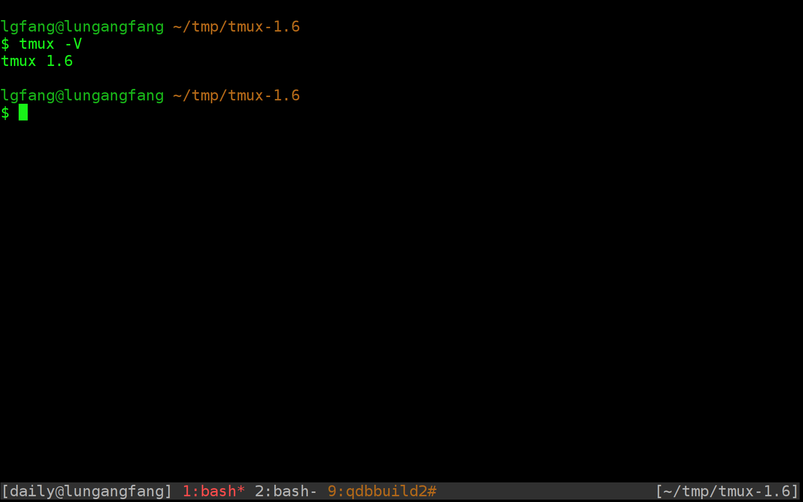
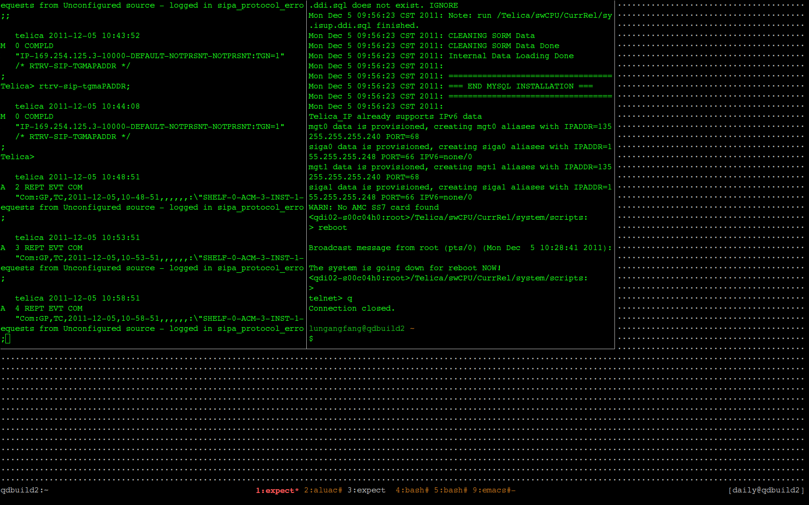
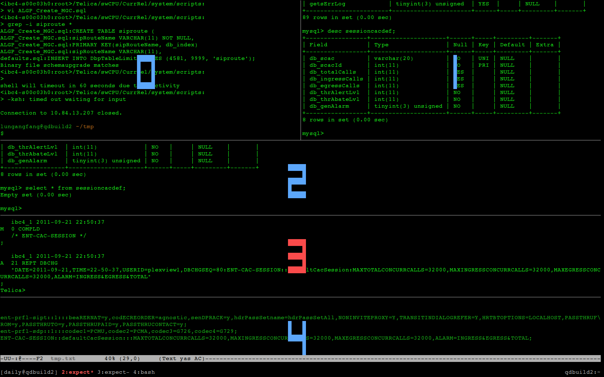
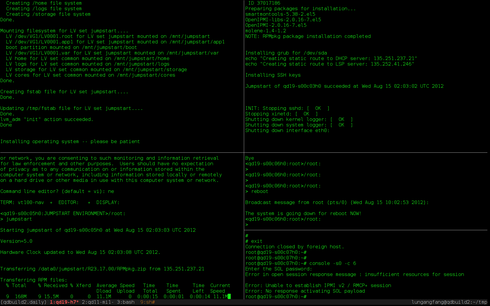
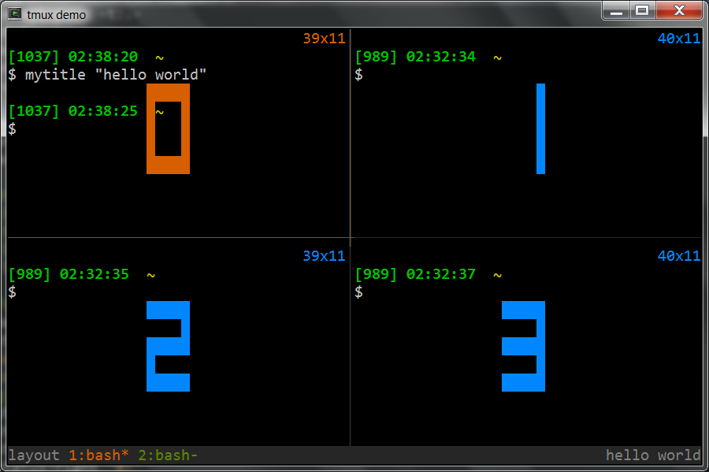
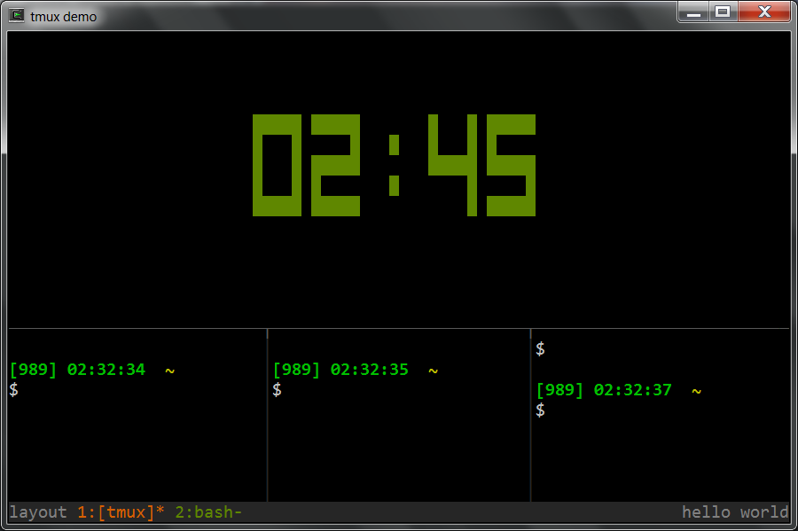
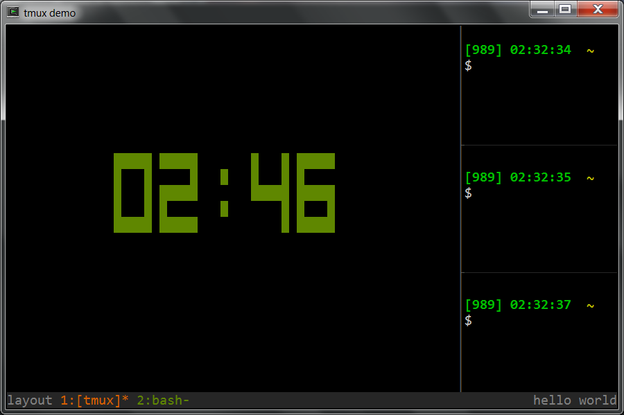
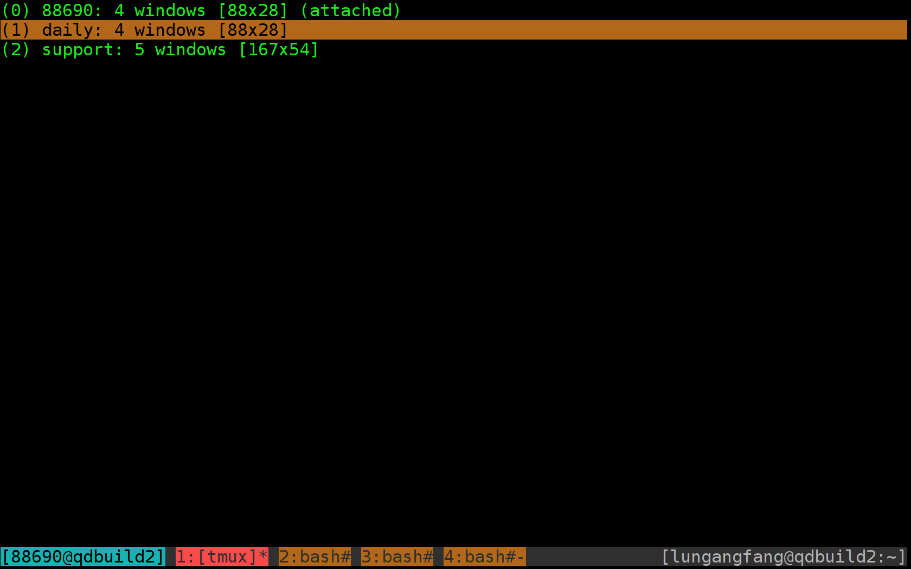
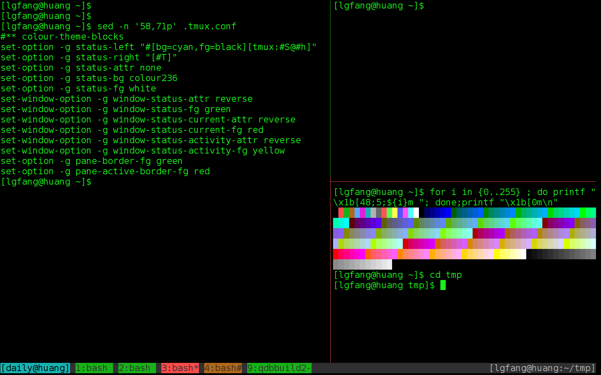

Tmux - A Great Terminal Multiplexer
Table of Contents
- 1. About this slides
- 2. The Itches
- 3. Why Tmux
- 4. Why NOT xxx
- 5. Feature Highlights
- 6. Demo
- 7. Installation
- 8. Setup
- 9. Basic operations
- 10. Enable mouse support
- 11. Intermediate Usages
- 12. Advanced
- 13. Q&A
- 14. Backup
1 About this slides
This slides explains why we want to use tmux as well as the basic features and configurations of tmux.
This page is a html slides. To view it in slides mode, press x then click
mouse to start browsing. For more help, press ?.
2 The Itches
- Loosing everything when the connection to a server break
- Cannot share current terminal with others
- Drag & drop again and again to tile terminal windows
- Switching among dozens of terminal windows
- Unable (or tedious) to open multiple connections
3 Why Tmux
A terminal multiplexer capable of
- tabbed windowing
- detach/re-attach
- remote-share, pair-working (esp. remote pair-working)
- window split and tiling
- grouping windows
- re-sizing windows
- …
Meanwhile, it is
- Easy to install & use
- Well defined command line interface
- For interactive use and for scripting.
- Well documented
- BSD licensed
4 Why NOT xxx
4.1 Why NOT VNC
The cons of VNC:
- Depends on X (GUI environment).
- Consume more CPU and network traffic (I think).
- Can not resize the desktop (Latest realvnc can).
- Does not tile (To be accurate, you can start a tiling WM in VNC. Average engineers just don't bother or able to do that).
- Non-native windows that response slowly
The pros of VNC:
- Uses dedicated password instead of login/password for sharing
- Supports X applications
4.2 Why NOT GNU "screen"
Tmux is kind of the next-gen of screen. People say tmux is superior since it
- Is easier to configure.
- Is easier to split window and change layout.
- Is able to resize window.
- Is easier to scripting.
- Cleaner architecture, code, document etc.
4.3 Why NOT secureCRT
I prefer "putty + tmux + to" since, as far as I know, secureCRT
- can not detach/attach
- can not group windows per projects(or bug/escalation etc.)
- can not remote share
- can not tile (?)
- seems it does not support UTF-8
- not convenient if the host list is really long
- can not jump to destination host via an intermediate server
- your hot-keys is not available other PCs, or after re-install
- non-free
5 Feature Highlights
5.1 Detach and re-attach
- Network unstable?
- Has to bring laptop home or meeting room?
- Laptop crashed?
- Mistakenly closed the terminal?
Does NOT matter! just re-attach.
5.2 Multiple "tabbed" windows on one connection

5.3 Remote share and auto-resize

This is a window auto-resized since my peer's terminal window is smaller than mine.
5.4 Split windows at will
5.4.1 Real-world example: working with TL1

One window for each of the following:
- Emacs to compose TL1 commands
- TL1 session to launch TL1 commands
- MYSQL session to inspect DB
- Another session to query DB to verify TL1 commands
- Misc. tasks
5.4.2 Real-world example: upgrade ATCA blades simultaneously

Each window monitors one blade.
5.5 Tile windows with preset layouts
5.5.1 tiled

5.5.2 main horizontal

5.5.3 main vertical

Other layouts not shown in this slides:
- even horizontal
- even vertical
5.6 Group windows into sessions

Focus on what you are working on right now.
Say, one session per project/work-item. Easily switch among the handful windows within current session. Windows in other sessions does not distract you.
5.7 Easy to use
- A simplistic setup procedure (the section of setup)
- A minimal set of hotkeys (the basic operations)
- A nice support of mouse even though it is a CLI (how to enable mouse support)
5.8 Suports scripting
- Automatically create or attach to a session
function tg { local session_name="$1" if [ -n "$session_name" ]; then tmux -2 attach -t "$session_name" || tmux -2 new -s "$session_name" else tmux -2 attach || tmux -2 new -s 'misc' fi }
- Retrieve content of the clipboard of tmux in Emacs
(defun lgfang-get-tmux-copied () "Get current tmux buffer" (interactive) (call-process "tmux" nil t nil "show-buffer"))
- A more complicated example can be found here
5.9 Free (as in "freedom")
Last but not least: it is BSD-licensed.
That means it is free to
- Use
- Modify
- Re-distribute
- Or even make profit from it.
6 Demo
If scheduled, demonstrate window/pane/attach/session/nesting
- Connect to server HOST-A (say, a server hosts UDR virtual machines) which I already has at least one tmux session.
- Create a demo session with "tg demo"
- Create windows/panes and ssh to HOST-B, which is only accessible from HOST-A (say the pilot card with 10.* IPs)
- Changing layout, rotate panes within the window
- Join/swap panes
- Share
- Disconnect and re-attach
- Create a nested tmux session on HOST-B and create windows within it.
- Switch between the sessions on host-A
- Explain the naming rule "session_name:window_index.pane_index"
- Moving windows/panes between sessions
- Automatically attach to tmux upon login
- the putty way
- the command line way
7 Installation
7.1 The most simple way
Copy a statically-linked "tmux" binary to the server.
7.2 The preferred way
Most modern linux/unix variants have package manage system like yum/ports which download and install tmux for you in a single command.
For instance, for fedora/rhel
yum install tmux
7.3 Install from source
Here is how you install tmux from source code in case needed. (NOTE: compile a statically linked, 32-bit binary for portability)
# install libevent if not already tar xvfz libevent-1.4.14b-stable.tar.gz cd libevent-1.4.14b-stable ./configure --prefix=$HOME/.local make && make install tar xvfz tmux-1.6.tar.gz && cd tmux-1.6/ ./configure --enable-static --prefix=$HOME/.local \ CFLAGS="-I$HOME/.local/include" LDFLAGS="-L$HOME/.local/lib" make && make install # echo "LD_LIBRARY_PATH=$HOME/.local/bin:$LD_LIBRARY_PATH" >> ~/.bash_profile echo "PATH=$HOME/.local/bin:$PATH" >> ~/.bash_profile
For cygwin, refer to here.
8 Setup
- Server side
Make sure your locale is a uft-8 one, such as
en_US.utf8orzh_CN.utf8.# in your profile export LC_CTYPE=zh_CN.utf8 # or "LC_ALL" if you prefer
- Make sure your terminal emulator
- deals with UTF8 chars correctly.
- does not intercept hot-keys sent to tmux.
- has a way to NOT send keys to application.
Let's take PuTTY for example:
Window -> Translation -> Received data...character set: UTF-8Your putty can display UTF-8 characters (the TMUX pane border and the Chinese chars).
Terminal -> Keyboard -> The Function keys and keypad: XtermR6Window -> Selection -> Shift overrides applications use of mouse.This enables you to copy/paste in your PuTTY as usual except you need to hold down
<shift>key in the meantime.NOTE: refer to copy mode for more sophisticate copy/paste.
9 Basic operations
All that you need for your daily work (Note that I bind the prefix key to
F12):
- New session ::
tmux [new -s session-name] - Attach ::
tmux attach [-t session-name] - Detach ::
F12 d - New window ::
F12 c - Split vertically ::
F12 _ - Split horizontally ::
F12 | - Change layout ::
F12 <space> - Kill pane ::
F12 x(Use this only when the pane does not response)
set-option -g prefix F12
10 Enable mouse support
set-option -g mouse-select-pane on set-option -g mouse-resize-pane on set-option -g mouse-select-window on set-window-option -g mode-mouse on
11 Intermediate Usages
You are ready to get started already. However, you may find following slides useful.
11.1 Important concepts
- Server instance
- Sessions
- Windows
- Panes
- Handover of key-stokes
11.2 Customization
Refer to my ~/.tmux.conf at ./tmux.html.
Some examples:
# Emacser can not use default prefix 'C-b' :) set-option -g prefix F12 bind-key | split-window -h bind-key _ split-window -v
11.3 Eye candy

11.4 Windows
- Select previous working window ::
F12 l - Select the N^th window ::
F12 N - Select next window (index+1) ::
F12 n - Select previous window (index-1) ::
F12 p - To rename a window :: =F12 ,= then input new name
11.5 Panes
- Select pane ::
F12 <Tab>/<left>/<right>/<up>/<down> - Swap two adjacent panes ::
F12 { - Break current pane to a new window ::
F12 ! - Join pane y in window x to current window ::
F12 jthen type inx.y - Swap with pane y of window x ::
F12 mthen type inx.y - Toggle Synchronize mode, i.e. duplicate input (key-stokes) to all
panes in the same window ::
F12 Ctrl-s. Sometimes, this is can be handy for testers
bind-key Tab select-pane -t:.+ bind-key BTab select-pane -t:.- set-option -g display-time 3000 bind-key j command-prompt "join-pane -s '%1'" bind-key m command-prompt -p "move (swap) current pane with: " "swap-pane -s %1" bind-key C-s setw synchronize-panes
11.6 Copy mode
F12 [orF12 <PageUp>to enter ``copy mode'', and then view, search and copy screen output as described below.- Scroll up/down:
<PageUp>/<PageDown>, or Emacs(or vi if you configured that way) key bindings, or mouse wheel. - Search, just use Emacs key bindings for search (or that of vi based on
your configure):
Ctrl-r- Type in string to search
Enter- Press
n/Nfor next/previous match
- Copy: Emacs/vi key bindings
- Scroll up/down:
- Paste:
F12 ] - Show "clip board":
F12 = - Customize if you want
set-window-option -g mode-keys emacs set-option -g history-limit 600000
11.7 Sessions within tmux client
- New session ::
F12 : new-session -s session_name - Choose(switch) session ::
F12 s - Move window among sessions ::
F12 : move-window -t session_name
11.8 Run complicated commands
- Command mode:
F12 : source-file .tmux.conf - Command line command:
tmux source-file .tmux.conf
11.9 About configuration
F12 : source-file .tmux.conf- "restart" tmux does not make new configure take effect?
You just "restarted" a session, not the tmux server.
- What does
-ginset-option -gmean?Without
-g, the option applies to current session only.
12 Advanced
12.1 Log screen outputs
When you want screen log of current pane, save it with F12 Ctrl-h
bind-key C-h command-prompt -p "save log to:" "copy-mode; send-keys 'M->' C-e C-space 'M-<' C-a C-w; save-buffer %%" # # if "set-window-option -g mode-keys vi", use this one: # bind-key C-h command-prompt -p "save log to:" "copy-mode; send-keys g 'space' G 'enter'; save-buffer %%"
12.2 Another way
Though I do not recommend this one, here it is:
- Start logging ::
F12 h - Stop logging ::
F12 H
# for mode-keys emacs bind-key h pipe-pane "cat >>$HOME/#S-#I-#P.log" \; display-message "Start logging($HOME/#S-#I-#P.log)" bind-key H pipe-pane \; display-message "Stop logging(#S-#I-#P.log)"
12.3 Nesting tmux
There are sometimes when need to nest tmux sessions. For example: Start a tmux session on local Linux box. Then, from within that tmux session, ssh to a server and run another tmux session.
To send prefix to
- Outer tmux session ::
F12 - Nested tmux session ::
F11 - tmux session nested twice ::
F11 Ctrl-b - One more layer ::
F11 Ctrl-b Ctrl-b(do you really want a nested nested nested … session?)
bind-key -n F11 send-prefix bind-key C-b send-prefix
12.4 Types of hot-keys
- Normal (follows the prefix) ::
bind-key Tab select-pane -t:.+ - Repeatable ::
bind-key -r Space next-layout - Without prefix ::
bind-key -n F11 send-prefix
12.5 Maximize a pane temporary
Use cases:
- Show more in the pane for a little while
- Maximize, copy (drag mouse) and restore
For latest tmux (version 1.8), already has built-in support. F12 z
to toggle.
For older versions, here is a trick :
unbind z bind-key z run "if [[ $(tmux list-window) =~ MAX ]]; then \ tmux last-window;\ tmux swap-pane -s MAX.0; \ tmux kill-window -t MAX; \ else tmux new-window -d -n MAX; \ tmux swap-pane -s MAX.0; \ tmux select-window -t MAX;fi"
12.6 Command line auto-complete
if [ -n "$BASH_VERSION" -a -f $HOME/.local/bin/bash_completion_tmux.sh ]; then source $HOME/.local/bin/bash_completion_tmux.sh fi # -n $BASH_VERSION ==> we are in bash
13 Q&A
References
- The official site: http://tmux.sourceforge.net/
- More tips from me: ./tmux.html
14 Backup
14.1 Reference card according to my conf
| List Keys | F12 ? |
| Detach | F12 d |
| New window | F12 c |
| Split vertically | F12 _ |
| Split horizontally | F12 | |
| Change layout | F12 <space> |
| Kill pane | F12 x |
| Select window | F12 idx |
| Last window | F12 l |
| Rename window | F12 , new-name |
| Save log | F12 Ctrl-h |
| Select pane | F12 <Tab>/<left>/<right>/<up>/<down> |
| Break current pane | F12 ! |
| Join a pane | F12 j x.y |
| Swap two panes | F12 { |
14.2 Auto-login and hot-keys
Some can not live without
- auto-login: the emulators remember hostip/username/password.
- auto-hotkey: a windows software enable you to define your own hotkeys.
I wrote "to" in expect, which is IMHO more convenient.